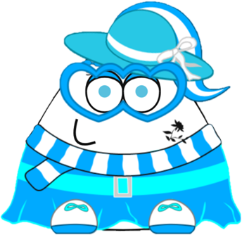

POUeSKY
Banimento é um dos dois tipos de punição que o jogo dá a um jogador que desrespeita as regras de dentro do jogo. Este tipo de punição só é dado pelo pelo próprio desenvolvedor, Paul G. Salameh.
Consiste em remover o jogador da conta e deixá-la fora do ar dos servidores Pou, por um tempo ou para sempre.Ao ser banido, se for um ban temporário, o usuário verá a seguinte mensagem: "Ah, não! Algo de errado aconteceu com o seu Pou! Tente mais tarde ou entre em contato conosco.". Se for um ban permanente, o usuário é apenas removido da conta, e o que o usuário verá será a tela de login, pedindo para que o usuário logue de novo na conta. Em ambos os bans o usuário perderá o apelido Pou e o email (o tempo dependerá do tipo do ban).
Se a conta do usuário tiver mais que 50.000 likes, a conta Pou sumirá em até 59 horas. Caso seja menor que 50.000 likes, a conta Pou sumirá instantaneamente.